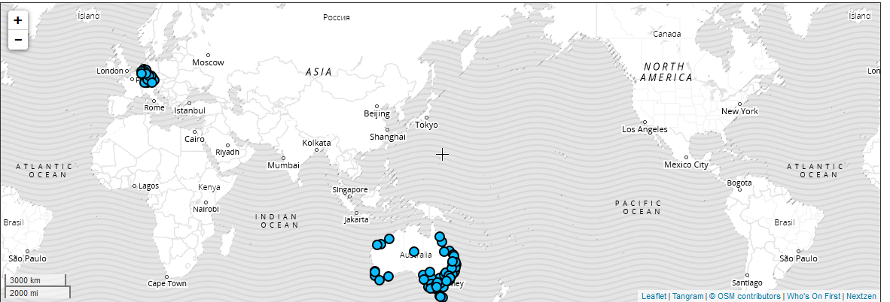

Finding Australian Locations with Placeholder
People write locations in many different ways. This makes them really hard to analyse, so we need a way to normalise them. I’ve already discussed how Placeholder is useful for coarse geocoding. Now I’m trying to apply it to normalising locations from Australian Job Ads in Common Crawl.
The best practices when using Placeholder are:
- Go from the most specific location information (e.g. street address) to the most general (e.g. country)
- Separate different parts of location information with commas
- Provide as much context as possible, for example adding the country when known
- When the country is known filter the results using the lineage
- Use the place types relevant to the problem and region
Who’s on First?
I really only want to know roughly where the advertised jobs are located. This can be a very complicated question for jobs that involve multiple sites, or are primarily visiting clients, or fully remote jobs. However a rough location is a useful concept and jobs in Adelaide are different to jobs in Sydney.
The simplest solution for this is matching text from a gazetteer. For example you could get a list of the most populous cities and just search the location text for the city name. Unfortunately city names are ambiguous, like Melbourne in both Victoria, Australia and Florida, USA. And it’s common for city names to be in street addresses like “Sydney Road”. But over a limited geographical region, like Australia, it’s an effective technique for not much effort.
This is in fact what Placeholder does, but with better rules for matching names and resolving ambiguity, and a much larger gazetteer called Who’s on First. It’s a really interesting open dataset; it captures locations based on how people understand them and has a lot of information. There are a limited number of placetypes like country and region, and they have names in multiple languages and associated coordinates and bounding regions in GeoJSON. It’s continually evolving as more open datasets get integrated and our notions of places change, like recently with North Macedonia and South Sudan.
This adds real benefits because suburbs like “Macquarie Park” can be detected to be in Sydney, and it has an existing location hierarchy that can be used. The better rules mean it can distinguish an ambiguous place by “Mornington” if you also supply the state. Otherwise information can be used to better order the choices when it is ambiguous.
Placeholder in Practice
Understanding Who’s on First is helpful for understanding how Placeholder behaves. For example in Australia a region roughly corresponds to a state or territory, a county is like a Local Government Area and a macrocounty is like a greater city. For example Ryde is a county, in the macrocounty of Sydney in the region New South Wales.
However currently the concept of macrocounty only exists in Australia and Germany. This is because the types of geographies people use depend on political structures, and Who’s on First is a living asset. Eventually there may be macrocounties in other countries, but the type of division to use has to depend on the context.

If I try to normalise “Sydney CBD, Australia” with placeholder I currently get the neighbourhood of Melbourne CBD. This is because “Sydney CBD” is not currently in Who’s on First, but “Melbourne CBD” is. Placeholder is pretty smart; adding more context like “Sydney CBD, NSW, Australia” gives the locality of Sydney.
I haven’t looked deeply how Placeholder works works yet, but the more context you give it the better it behaves. In particular for English it seems to prefer the location to go from specific to general. For example the top result for “Australia, Newcastle” is in South Africa, but “Newcastle, Australia” is in Australia.
To get better results when you have more context you can filter the results to the context. For example you could just filter to places in Australia by filtering on it’s What’s on First id.
WOF_AUS_ID = 85632793
for place in places:
for l in place['lineage']:
if ('country' in l and l['country']['id'] = 85632793):
return placeFinally Placeholder seems to be sensitive to tokens used. It seems to like vertical struts | and parentheses () confuse Placeholder. This is probably down to the tokenisation logic.
Putting it together
Different websites have different conventions for storing location information. Rewriting the locations from specific to general, separated by commas with as much context as possible gets much beter results.
This requires writing slightly different rules for every website, but works very well in practice. If we wanted to improve the output we could look at better ways of filtering and ranking on relevant context, but for now it works well enough.
When working in Python running the Placeholder server means there’s a bit of extra setup; but it looks like with some care (and some time) it looks straightforward to port the logic to Python if we needed to make it easier to setup.